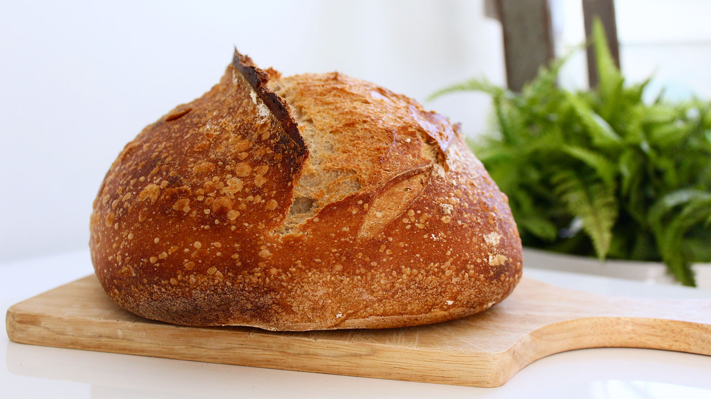

My Honey Wheat Bread

My Recipe
This dough recipe did not start out as my own. When
we were all stuck at home and things were crazy one
thing I decided to focus a little time on was perfecting
a "home made" bread recipe. Everyone in my family loves
bread and has a great respect for hand made food. Traditions
that can be passed down.
Thus the tradition began. I researched many recipes and
took time to read them all before trying a few. The one
I landed on is the one that got me closest to the recipe
I'm detailing here. There are ingredients I've found you
can do without, also better ways to manage the yeast and
get a good bloom. This recipe has taken such center stage
in our family that I handed out several loafs as Christmas
gifts this past holiday season.
Ingredients
- 3 cups warm water
- 2 (.25 ounce) packages active dry yeast
- 2/3 cup honey, divided
- 5 cups bread flour
- 5 tablespoons butter, melted, divided
- 1 tablespoon salt
- 4 cups whole wheat flour, or more as needed
Directions
- Mix warm water, yeast, and 1/3 cup honey in a
lage bowl to dissolve. Add 5 cups bread flour, and stir to
combine. Let sit for 30 minutes, or until big and bubly.
- Mix in 3 tbs melted butter, remaining 1/3 cup honey, and
salt. Stir in 2 cups whole wheat flour. Transfer dough to
a floured work surface and gradually kneed in remaning 2 cups
whole wheat flour. Knead until dough starts to pull away from
the work surface, adding more whole wheat flour as neccessary;
dough should be a bit tacky to the touch, but not too sticky.
- Place in a greased bowl, turning once to coat the surface
of the dough. Cover with a dish towel and let rise in a warm
place until doubled, 45 minutes to 1 hour.
- Grease three 9x5-inch loaf pans. Punch down the dough,
and divide it into 3 loaves. Place in the prepared loaf
pans, and allow to rise until dough has topped the pans by
one inch, another 45 minutes to 1 hour.
- Meanwhile, preheat the oven to 350 degrees F (175
degrees C).
- Bake the risen loaves in the preheated oven until golden
brown for 25 to 30 minutes, do not overbake.
- Lightly brush the tops of the loaves with remaining
2 tablespoons melted butter when done to prevent crust
from getting hard. Cool completely.